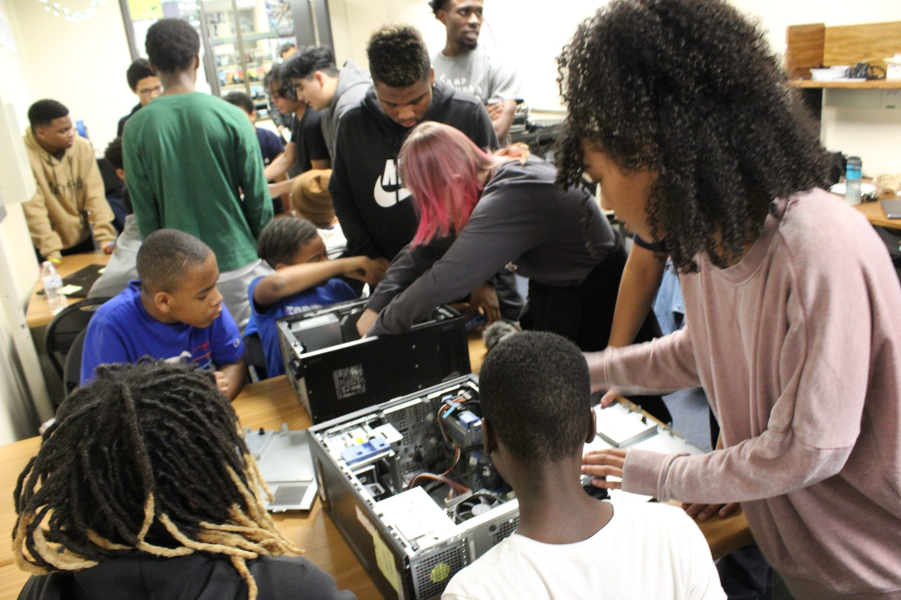
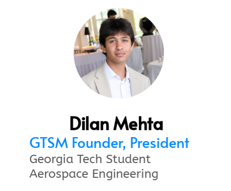
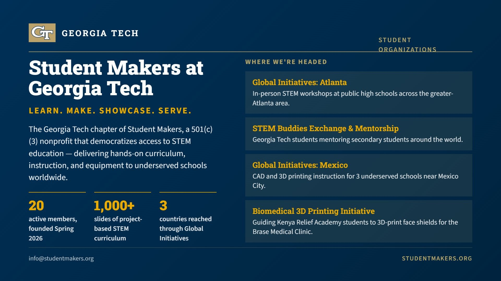
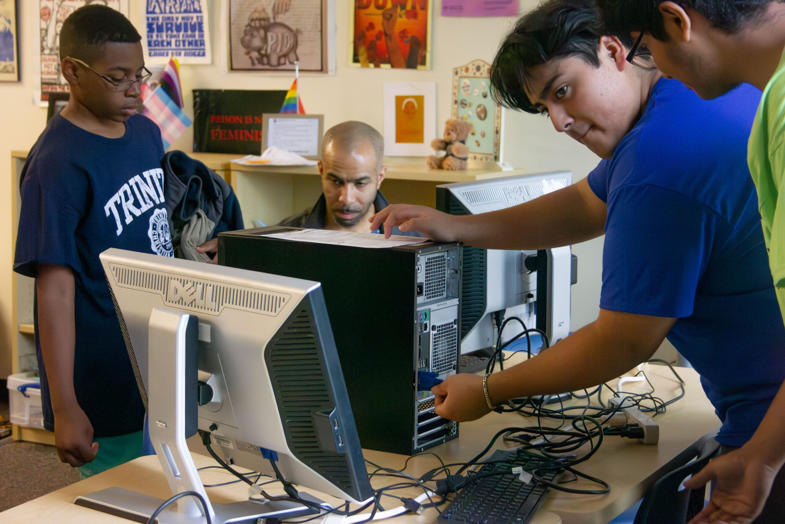
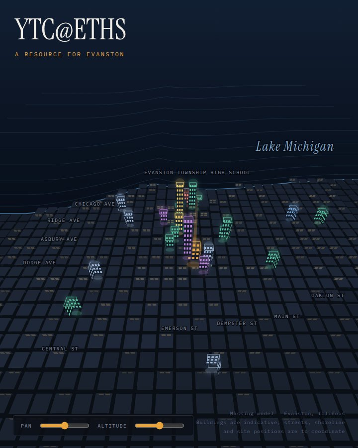
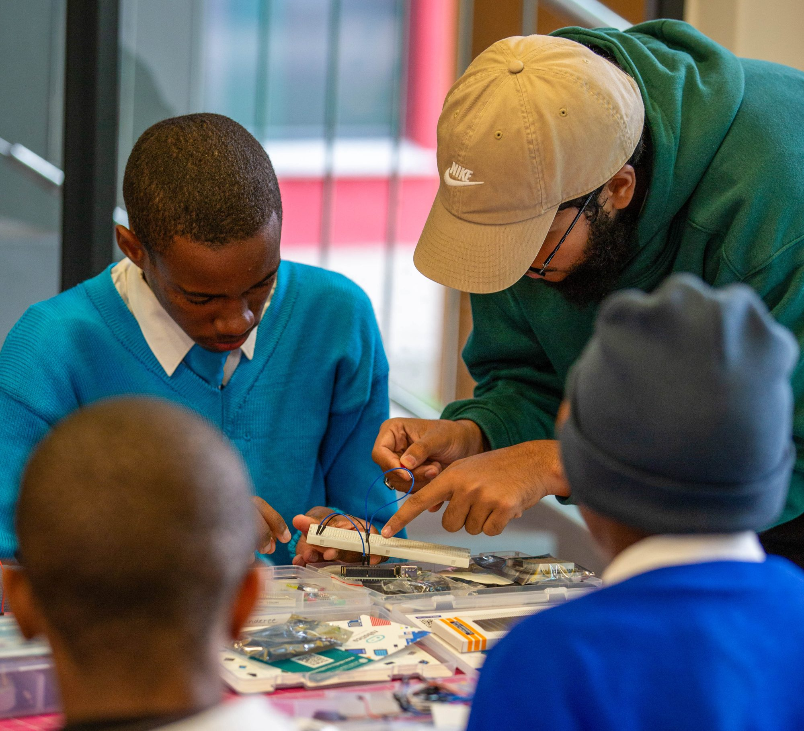
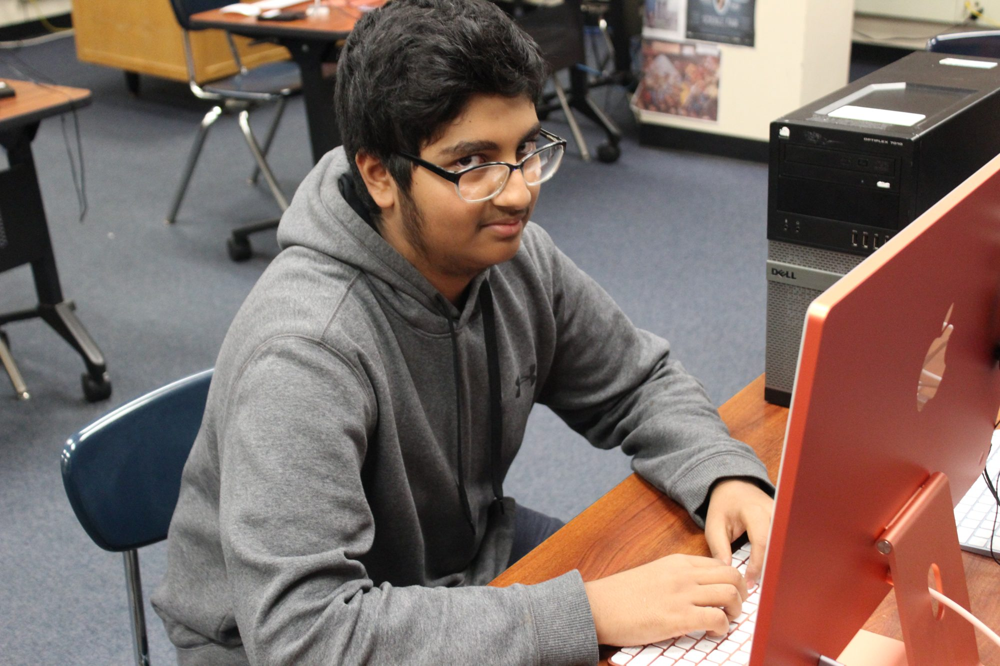

Ava Mosely
Purdue · Mechanical Engineering
Former YTC co-president at ETHS.
I can confidently say that this club has well prepared me for engineering in college and beyond.

Youth Technology Corps · Evanston Township High School
A student-run club at ETHS since 2009. Members learn technology, teach it to the next person, and carry it out the door — into Evanston, and across the world.
What's new
Georgia Tech is the first university to join YTC's College Partner Program. Future engineers from Student Makers at Georgia Tech will teach STEM sessions virtually into the ETHS clubroom this school year — and additional college partners will follow, widening the network available to students at ETHS and across the YTC Global Alliance.
It's the same idea the club runs on, one rung up: someone a few years older shows you how, and then it's your turn.



How it works
Most members have never opened a computer or touched a robot before their first meeting. Within a year they're the ones explaining it — to a freshman, to a family picking up a refurbished machine, to a class on another continent. That handoff is the whole design.
“When I taught someone how to fix a computer and later saw them helping another person, I felt proud. It made me see that what we learn here grows, because we share it.”
— Chris, 17 · Student Voices at YTC, 2025

Close to home
Schools, senior centers, churches, community organizations across Evanston — 400 refurbished computers, hundreds of lessons, since 2009. ETHS is the one under the beacon.
Open the map →From Evanston outward
ETHS students have taught robotics into Ethiopia by video call, trained the teachers who launched Nigeria's first class, and in July 2025 five YTC members flew to Namibia and met, in person, the students they'd only known on a screen.
Nigeria · Namibia · Sierra Leone · Cameroon · Ethiopia · Mozambique · Ghana
YTC's African partner countries, with Mexico and Guatemala in Latin America. Evanston-refurbished computers have also gone to El Salvador and Haiti.
Follow the work across borders →
Where it leads
Former members carry the clubroom with them — the habit of learning something, taking responsibility for it, and helping the next person.
Purdue · Mechanical Engineering
Former YTC co-president at ETHS.
I can confidently say that this club has well prepared me for engineering in college and beyond.

DePaul · Cybersecurity
Former YTC co-president at ETHS.
YTC was the best decision I ever made, and I am confident that I will be successful in life because of it.

University of Minnesota · Product Design
YTC alum, ETHS.
YTC transformed my perspective on the world and enriched my understanding of human connections.
The club has generations
“YTC has been passed down through generations. You learn from the leaders before you, and then you take your turn.”
— Furqaan Idrees · ETHS. Earned a computer as a freshman; by junior year was overseeing instruction at Haile Manas Academy, Ethiopia.

Who runs this
Support YTC Evanston
Support covers the practical things that keep student-led learning moving: technology, instruction, program supplies and the next serious teaching opportunity — and, right now, the small organization behind the club.
Youth Technology Corps NFP, Inc. is a 501(c)(3) nonprofit, tax-exempt since 2003. The Global Learning Alliance was submitted for the 2026 Chicago Innovation Awards.